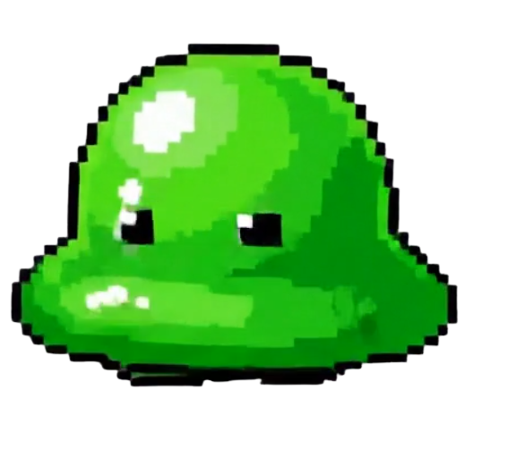
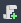

Lliçó 2:L'Arquitectura de Godot i el nostre primer Enemic
En aquesta lliçó entendrem com es construeix realment un videojoc en Godot. Deixarem de banda la configuració i començarem a col·locar les primeres peces del nostre món digital.
1. Conceptes Fonamentals: Els Nodes
Si imaginem que el nostre videojoc és una construcció de LEGO, els Nodes són les peces individuals (un rectangle de 2x4, una roda, una finestra). Cada node té una funció específica: mostrar una imatge, reproduir un so o detectar una col·lisió.
Un node té tres característiques que el fan únic:
- Té un nom: (ex: "Enemic").
- Té propietats editables: (ex: "Posició").
- Rep actualitzacions en cada fotograma: (el motor li diu constantment "actua!")
- Es pot extendre amb noves propietats i funcions.
- Es pot connectar amb altres nodes per a realitzar accions.
Anem a crear el nostre primer node per veure com funciona i començar a crear el nostre primer personatge, un enemic.
Per a crear personatges començarem amb un CharacterBody2D
- Al panell d'Escenes, prem el botó + (New Scene).
- Elegeix "Other Node" i busca CharacterBody2D. Fes doble clic per crear-lo.
- Fixa't en el panell de l'Inspector a la dreta. Aquí pots veure i editar totes les propietats del node.
L'Inspector (a la dreta de l'editor) és on personalitzem cada peça. Qualsevol canvi que fem aquí s'emmagatzema en el fitxer de l'escena. Depenent del tipus de node, trobarem unes característiques o altres.
Algunes de les característiques més importants del CharacterBody2D són:
A. Secció "CharacterBody2D" (La lògica física)
Aquí és on configurem com es comporta el cos de l'enemic davant el món:
- Motion Mode: Si el posem en Grounded, el motor l'entendrà com un personatge que camina per terra (amb gravetat). Si el posem en Floating, serà per a enemics que volen o naden (com el geni o la bruixa dels teus exemples).
- Slide On Ceiling: Una opció per a decidir si llisca o para quan xoca amb un sostre.
B. Secció "Transform" (L'ànima matemàtica)
Com hem vist, tots els nodes 2D tenen aquesta secció. És vital per a la programació:
- Position: Les coordenades on es troba. Recorda: si canvies la X a l'Inspector, l'enemic es mou a la dreta.
- Scale: Ací és on canviaràs la mida si les teues imatges són massa grans o menudes (ex: 2, 2).
- Rotation: Útil per si vols que l'enemic estiga inclinat o caigut.
C. Secció "Collision" (Les fronteres)
- Layer (Capa): En quina capa està el meu enemic? (Ex: Capa 2).
- Mask (Màscara): Quines capes "mira" l'enemic per a no travessar-les? (Ex: Capa 1, on està el terra).
🎮 Com interactuar amb l'Inspector des del Codi?
Més endavant veurem la creació de codi, però qualsevol paraula que veieu a l'Inspector pot ser controlada per l'script.
Si volem que l'enemic es moga, escriurem:
velocity.x = 100I si volem que una propietat nova del node aparega a
l'Inspector per poder canviar-la fàcilment sense entrar al codi, usarem la paraula màgica @export
a la definició.
2. L'Escena: Més que un nivell, un "Sub-muntatge"
En molts motors de jocs, una "escena" es refereix només a un nivell (el bosc, el castell). En Godot, una escena és qualsevol conjunt de nodes que tinga sentit per si mateix.
🧩 El símil del LEGO: La Pota i l'Animal
Imagineu que volem construir un animal de LEGO complex. No intentarem posar totes les peces (nodes) en una sola pila gegant. En lloc d'això, treballarem de forma modular:
- Creem una Escena "Pota": Ajuntem unes quantes peces (un node de moviment, un de
gràfics per a l'ungla, un per a l'os). Guardem aquest muntatge com a
pota.tscn. - L'Escena és independent: Podem provar la pota tota sola, fer que es moga o canviar-li el color. Funciona de manera autònoma.
- Instanciar (Cridar l'escena): Quan anem a crear l'escena "Animal", no tornem a
construir les potes des de zero. Simplement "instanciem" (arrosseguem) l'escena
pota.tscnquatre vegades dins de l'animal.
🚀 Per què això és "màgic" per al flux de treball?
Actualització en cadena: Si un cop acabat l'animal decidim que les ungles han de ser blaves, no cal canviar les quatre potes una a una. Anem a l'escena original de la pota, canviem el color de l'ungla, i automàticament totes les potes de tots els animals del joc s'actualitzaran.
Ordre i neteja: L'escena de l'animal es veu neta (només té 4 "instàncies" de pota) en lloc de tenir 50 peces soltes. És una de les característiques bàsiques de la programació orientada a objectes,l'Encapsulament.
L'Arbre de Nodes (The Scene Tree)
Dissenyar l'Arbre de Nodes és, en realitat, dissenyar la jerarquia lògica del nostre "animal". Els nodes s'organitzen en una relació de Pare-Fill:
- L'Arrel (Root): És el node "cap" de l'escena. Si movem el pare (el cos de l'animal), tots els fills (les potes instanciades) es mouen amb ell de forma solidària.
- Herència de Propietats: Si el pare escala al doble de mida, les potes es fan el doble de grans automàticament.
- Especialització: Com a docents, ensenyem a l'alumne a triar la peça correcta. Per
exemple, si la
pota ha de fer soroll en caminar, li afegirem un node fill de tipus
AudioStreamPlayer.
"Godot ens permet treballar com un estudi real: un alumne pot estar dissenyant l'escena de la 'Pota', un altre la de la 'Cua' i un altre la del 'Cap'. Al final, només hem d'ajuntar les escenes per a donar vida a l'animal sencer. Això facilita el treball en equip i la correcció de projectes."
4. 📜 Fonaments de GDScript: El "Manual d'Instruccions"
GDScript és un llenguatge d'alt nivell dissenyat específicament per a Godot. La seua principal virtut a l'aula és la seua claredat visual: s'utilitza la indentació (espais) per a definir blocs de codi, el que ajuda l'alumnat a estructurar el seu pensament.
1. Variables i la "Màgia" de l'Inspector (@export)
Les variables són contenidors d'informació. En Godot, tenim un superpoder docent: la paraula clau
@export.
- Variables estàndard: Es queden dins del codi (ex:
var vida = 100). - Variables Exportades: Si escrivim
@export var velocitat = 200, aquesta variable apareixerà a l'Inspector de Godot.
2. Les Funcions "Callback" (Portes d'entrada)
Godot ens dona unes funcions especials que s'executen en moments concrets de la vida del node:
func _ready():S'executa una sola vegada quan el node entra en escena (en "nàixer"). És on fem les configuracions inicials.func _process(delta):És el bucle principal que s'executa en cada fotograma (unes 60 vegades per segon). Aquí és on escrivim el moviment constant.
3. El concepte de delta (Física i Temps)
Aquesta és una de les lliçons més importants per a l'alumnat.
- Què és?
deltaés el temps que ha passat des de l'últim fotograma. - Per què serveix? Si movem un enemic 100 píxels en cada fotograma, en un ordinador ràpid anirà com un coet i en un vell anirà lent.
- La solució: Multipliquem sempre la velocitat per
delta. Així, el moviment és independent de la potència de l'ordinador.
4. Creant el Primer Enemic: El Blob
Anem a posar-ho en pràctica creant el nostre primer personatge: un enemic blob.
Pas 1: Crear l'Escena
- Al panell d'Escenes, prem el botó + (New Scene).
- Tria Other Node i busca
CharacterBody2D. Aquest node és ideal per a personatges que es mouen i xoquen. - Canvia-li el nom a
Blob(fent doble clic). - Guarda l'escena (Ctrl+S) dins de la carpeta
scenes/comblob.tscn.
Pas 2: Afegir la Imatge (Sprite)
- Descarrega aquesta imatge del blob i emmagatzema-la a la carpeta
assets/:
 - Fes clic dret sobre el node
Blobi selecciona Add Child Node. - Busca
Sprite2Di crea'l. - A l'Inspector (dreta), arrossega la imatge
blob.pngque acabes de guardar a la propietat Texture. - (Opcional) Si és Pixel Art, recorda ajustar l'escala o el filtre si no ho has fet als ajustos globals.
Pas 3: Afegir la Col·lisió
Veuràs una alerta ⚠️ al node CharacterBody2D. Ens diu que li falta una forma de col·lisió.
- Afig un altre node fill a
BlobtipusCollisionShape2D. - A l'Inspector, a la propietat Shape, selecciona New CircleShape2D o la forma que millor penses s'adapta al blob.
- Ajusta la mida per a que cobrisca l'sprite.
Ara, si prems F6 (Play Scene), veuràs el teu Blob quiet en la cantonada superior esquerra de la pantalla. Això és perquè la seua posició (0,0) coincideix amb l'origen de coordenades.
5. Animant en 4 Direccions i Moviment Autònom
Ara farem que el nostre Blob tinga vida pròpia, d'aquesta forma el blob es moura lliurement per la pantalla.
Pas 1: Preparar els Sprites
Descarrega les 4 imatges per a les direccions i guarda-les a la carpeta corresponent:

{kind=link}
{kind=link}
{kind=link}
Pas 2: Crear les Animacions amb AnimatedSprite2D
- Com que volem animacions senzilles, usarem un node
específic per a això. Esborra el node
Sprite2Di afig un node AnimatedSprite2D com a fill deBlob. - A l'Inspector, on posa Sprite Frames, tria New SpriteFrames.
- Fes clic sobre la paraula
SpriteFramesque acaba d'aparèixer per a obrir el panell inferior d'animació. - Important: Canvia el nom de l'animació per defecte (
default) awalk_down(fent doble clic). - Prem la icona de "Reixeta" (Add frames from Sprite Sheet) ▦.
- Selecciona
blob_front.png. Configura Horizontal: 2 i Vertical: 2. - Selecciona els 4 fotogrames i prem Add 4 Frames.
- Repeteix el procés creant noves animacions (botó de foli amb +) per a:
walk_up(amb blob_back.png)walk_left(amb blob_left.png)walk_right(amb blob_right.png)
Pas 3: El Codi de Moviment Aleatori
Per a crear el codi per a que camine, selecciona el node CharacterBody2D i prem la icona de  per a
crear un script blob.gd:
extends CharacterBody2D
@export var speed = 50
var movement_direction = Vector2.ZERO
func _ready():
# Triem una direcció aleatòria al començar
choose_new_direction()
func _physics_process(delta):
# Movem el personatge
velocity = movement_direction * speed
move_and_slide()
# Actualitzem l'animació segons la direcció usant AnimatedSprite2D
if velocity.length() > 0:
if abs(velocity.x) > abs(velocity.y):
if velocity.x > 0:
$AnimatedSprite2D.play("walk_right")
else:
$AnimatedSprite2D.play("walk_left")
else:
if velocity.y > 0:
$AnimatedSprite2D.play("walk_down")
else:
$AnimatedSprite2D.play("walk_up")
func choose_new_direction():
# Generem un vector aleatori (dalt, baix, esquerra, dreta o diagonals)
movement_direction = Vector2(randf_range(-1, 1), randf_range(-1, 1)).normalized()
# Tornem a canviar de direcció d'ací entre 2 i 3 segons
await get_tree().create_timer(randf_range(2.0, 3.0)).timeout
choose_new_direction()
📝 Tasca
Has de crear l'escena del teu primer enemic seguint els passos anteriors.
- Crea l'escena completa amb AnimatedSprite2D i CollisionShape2D.
- Comprimeix el teu projecte
- Puja l'arxiu comprimit a l'Aula Virtual.